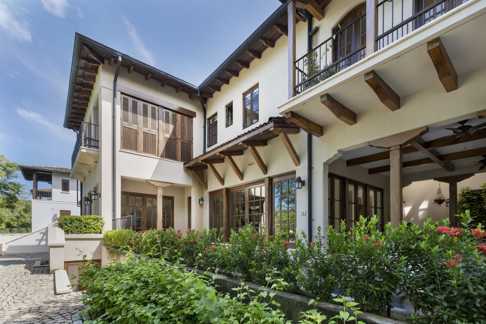
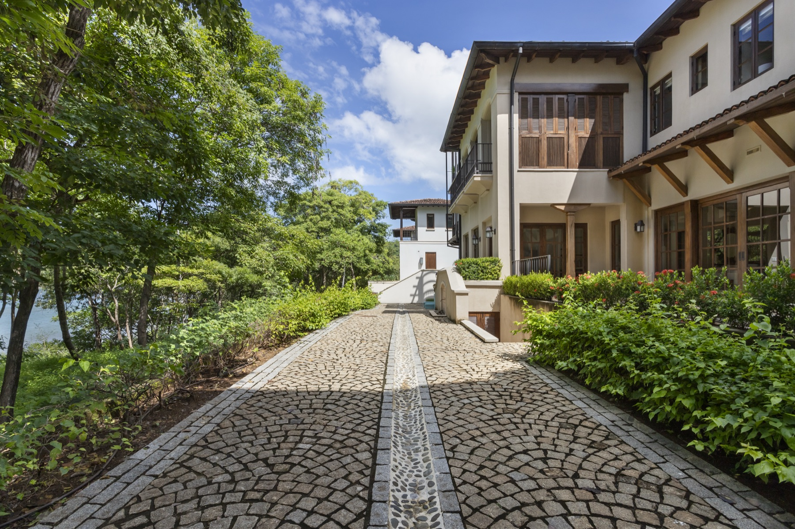
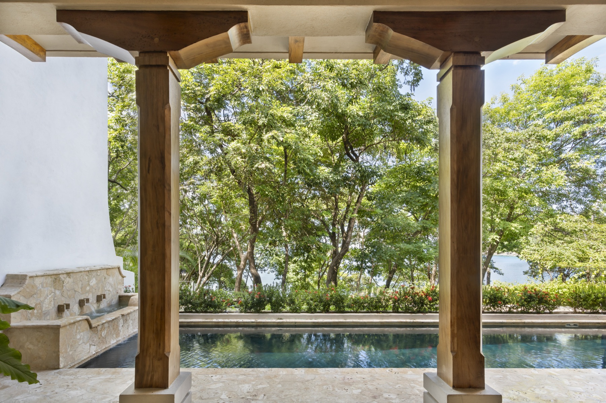

Casa Los Monos
Custom House · 350 m²
Custom House · 350 m²

Its contrasting cream-and-brown palette references Guanacaste’s white-faced capuchin monkeys. An enfilade arrangement of the living and dining spaces gives every room a shared view to the Pacific Ocean, while the upper floor carves out a studio apartment for short-term rental.

The traditional colonial courtyard is reinterpreted as a pool terrace: planters at the property’s edge provide privacy while dissolving the boundary between the house and the ocean view below.



Photography by Topofilia Studio.